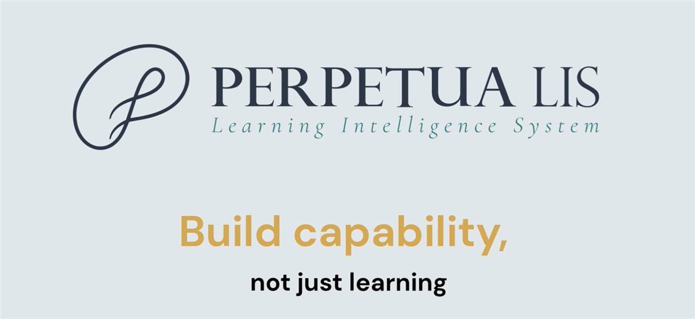

Bring workplace knowledge into learning.
Explore how procedures, internal guidance and subject expertise could become structured learning for your people.
Perpetua LIS · Learning Intelligence System
Create courses and assessments from your organisation’s own material. Bring intelligence into the workflow, with people in control.
AI-assisted creation
Illustrative workflow · not the product interface
Built for learning
in the real world
A different starting point
Every organisation holds knowledge its people need. Perpetua LIS starts with that context, connecting how learning is created, assessed and supported.
01Grounded in your organisation.
Build from the material your people already use.
02Designed around understanding.
Connect assessment to the learning objective.
03One connected workflow.
Bring creation, assessment and learner support together.

See the product story
Explore the public demonstration, then discuss how Perpetua LIS could fit your organisation’s learning needs.
How it works
A connected process, with a clear place for human review.
Start with documents and source material from your organisation.
Shape course content and assessments with AI-assisted workflows.
People check the material before publishing it for learners.
Support learners in context and explore the learning data.
Inside Learning Intelligence 1.0
Explore the pilot-ready capabilities, from the designer’s first draft to the manager’s next question.
For learning designers
Start with the material your organisation already uses. Bring course design, content creation and publishing into one connected workflow.
For learning designers
Build assessment alongside the learning. Keep the purpose of each question connected to what people need to understand.
For learners
Give learners support grounded in their course material, with a readiness check to establish their starting level.
For L&D and managers
Explore learning data in plain English, supported by administration tools for running learning across an organisation.
Who it’s for
Start the conversation with the knowledge your people need to use at work.
Explore how procedures, internal guidance and subject expertise could become structured learning for your people.
Explore a workflow that brings your source material, learning objectives and assessment design together.
Discuss how your organisation’s expertise and approved material could support learning in your own context.
The company behind Perpetua LIS
Melbourne, Victoria · Australia
Perpetua Foundry is building learning intelligence for organisations that want to connect learning with capability.
The company brings together enterprise transformation, technology and learning perspectives. Perpetua LIS puts that focus into practice through connected workflows for creating, assessing and supporting learning.
A simple conviction: learning at work should help people grow.
Meet Perpetua Foundry (opens the existing company site in a new tab)Intelligence with oversight
Human review and publishing are part of the workflow before learning reaches the learner.
Use AI-assisted workflows to shape learning from your source material.
People review what will be shared with learners.
Keep the publication decision with the people responsible for learning.
A clear view of what’s next
Perpetua’s broader vision builds in stages. The distinction between current and planned capabilities stays clear.
1.0 / PILOT-READY
Create, deliver, assess and manage learning through AI-assisted workflows.
The first product stagePLANNED / NEXT STAGE
The planned direction includes learning that adapts as each person progresses.
Planned, not a released 1.0 featurePLANNED / LONGER-TERM VISION
A planned organisational view of capability, connected to business needs and learning evidence.
Planned, not a released 1.0 featurePlanned stages are indicative. Timing and scope may change; confirm availability directly with Perpetua Foundry.
Before we talk
Have a question about your organisation’s needs?
Perpetua LIS is a Learning Intelligence System for organisational learning. Its first stage brings AI-assisted course creation, assessments, learner support and analytics into a connected workflow.
Perpetua LIS creates courses from an organisation’s own source material or from a prompt. A walkthrough is an opportunity to explore how that could work with your content.
Learning Intelligence 1.0 is described as pilot-ready. Its published capabilities include course design, assessments, Quick Checks, narration and publishing, the learning assistant, readiness checks, analytics and enterprise administration.
A person reviews and publishes the learning before it reaches learners. AI assists the workflow; people retain the review and publication role.
They are described as planned stages. They should not be understood as released capabilities of version 1.0. Timing and scope are indicative and may change.
Book a walkthrough to discuss your organisation’s needs and confirm current availability, commercial plans and next steps directly with Perpetua Foundry.
Your next step
Explore Perpetua LIS with your organisation’s learning needs in mind.